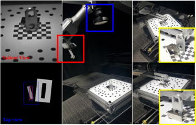
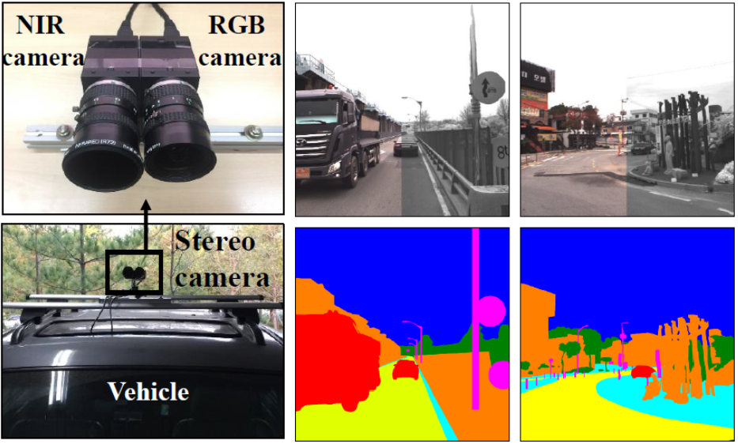
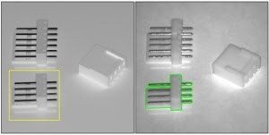
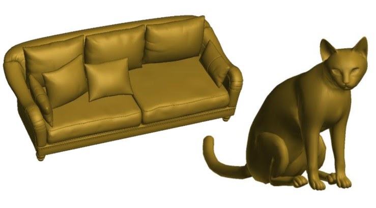
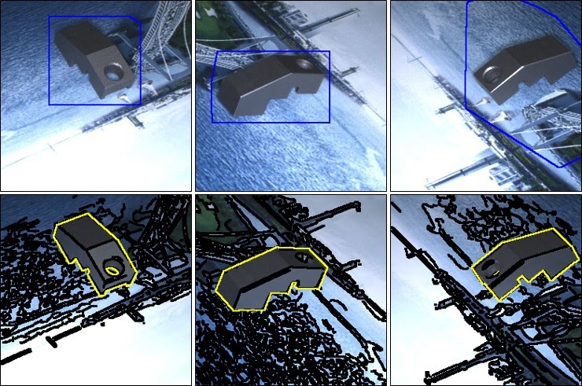
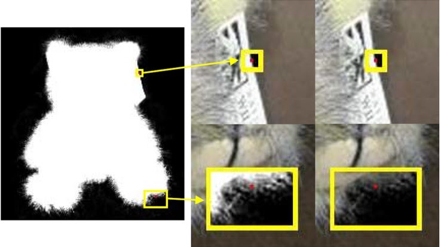
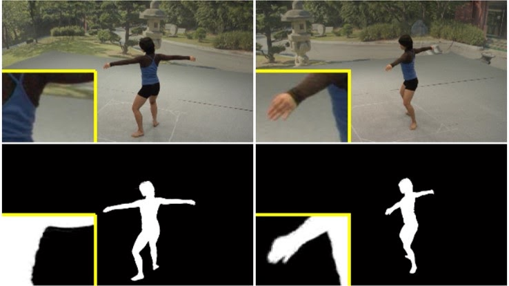
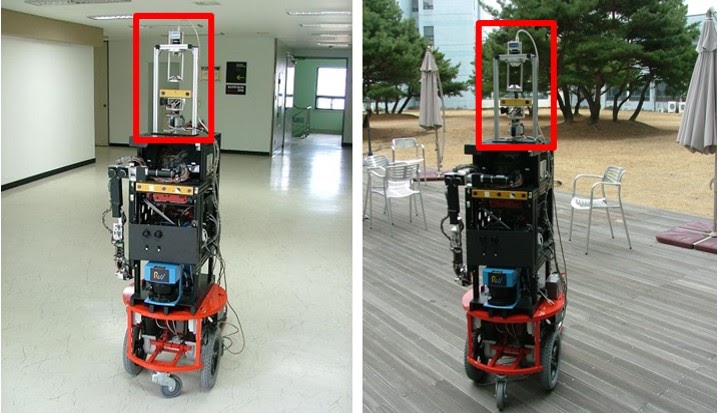

Conference on Empirical Methods in Natural Language Processing (EMNLP), 2026
ECCV Workshop, 2026 1st Place · MUMU Track, 8th LSVOS
ECCV Workshop, 2026 1st Place · Track 2, 8th LSVOS
European Conference on Computer Vision (ECCV), 2026 Paper Project

IEEE Robotics and Automation Letters (RAL), 5(2), pp. 2506-2513, April 2020. Presented at ICRA, May 2020 Paper




Journal of Korea Robotics Society (KROS), 12(1), pp. 33-41, Feb. 2017 Best Paper Award Paper


IEEE International Conference on Image Processing (ICIP), Sep. 2011 Paper

Journal of Korea Robotics Society (KROS), Sep. 2011 Paper